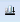
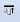

Aligning Elements
Element alignment allows you to group, combine, and align elements on the canvas.
Select the topic related to your task:
Align Elements Horizontally
- You are in Design or Test mode, you have three or more elements selected, and you want to space the elements evenly along a horizontal plane.
- From the canvas, select the elements you want to align horizontally.
- On the Home tab, in the Selection group, click Horizontally Even Spaced .
- The selected elements are evenly spaced along the x-axis.
Align Elements to the Bottom
- You are in Design or Test mode, you have two or more elements selected, and you want to align the elements to the bottom.
- From the canvas, select the elements you want to align to the bottom.
- On the Home tab, in the Selection group, click Align Bottom

.
- The selected elements are aligned with the bottom edge of the element lowest in position on the canvas.
Align Elements to the Center
- You are in Design or Test mode, you have two or more elements selected, and you want to align the elements to the center.
- From the canvas, select the elements you want to align to the center.
- On the Home tab, in the Selection group, click Align Center .
- The selected elements are aligned to the average distance between the element farthest to the left and the element farthest to the right among the selected elements, and the center position of each element is aligned along a vertical plane.
Align Elements to the Left
- You are in Design or Test mode, you have two or more elements selected, and you want to align the elements to the left.
- From the canvas, select the elements you want to align left.
- On the Home tab, in the Selection group, click Left .
- The selected elements are aligned with the left edge of the element farthest to the left.
Align Elements to the Middle
- You are in Design or Test mode, you have two or more elements selected, and you want to align the elements to the middle.
- From the canvas, select the elements you want to align to the middle.
- On the Home tab, in the Selection group, click Align Middle .
- The selected elements are aligned to the average distance between the element farthest to the top and the element farthest to the bottom among the selected elements, and the center position of each element is aligned along a horizontal plane.
Align Elements to the Right
- You are in Design or Test mode, you have two or more elements selected, and you want to align the elements to the right.
- From the canvas, select the elements you want to align right.
- On the Home tab, in the Selection group, click Align Right .
- The selected elements are aligned with the right edge of the element farthest to the right.
Align Elements to the Top
- You are in Design or Test mode, you have two or more elements selected, and you want to align the elements to the top.
- From the canvas, select the elements you want to align to the top.
- On the Home tab, in the Selection group, click Align Top

.
The selected elements are aligned with the top edge of the element farthest to the top.
Align Elements Vertically
- You are in Design or Test mode, you have three or more elements selected, and you want to space the elements evenly along a vertical plane.
- From the canvas, select the elements you want to align vertically.
- On the Home tab, in the Selection group, click Align Vertical .
- The selected elements are evenly spaced along the y-axis.
Align Elements to Wrap
You can align all the selected elements and objects on the canvas so that they display in a row, side-by-side, and then wrap to the next row when space runs out on the canvas. This allows you to view elements in a grid-like format.
NOTE: By default, when you drag multiple elements over to the canvas, the elements will display in this alignment wrap format.
- You are in Design or Test mode, you have two or more elements or objects selected, or you have dragged over several data point instances and you want to align the elements to the middle.
- From the canvas, select the elements\objects you want to align wrap.
- On the Home tab, in the Selection group, click .
- The selected elements are aligned in a row to the upper-left-hand corner of the canvas, and wrapped to the next line, if necessary.
Related Topics
For workspace overview, see Selection.
For background information, see Configuring Elements
For keyboard shortcuts, see Element Keyboard Shortcuts.